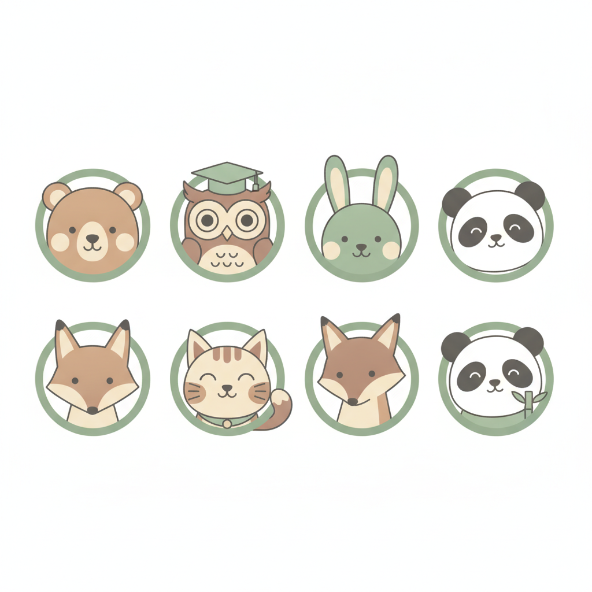
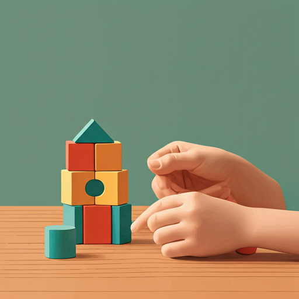

最新育兒專文

大腦開發
如何透過日常遊戲刺激幼兒前庭覺發展？
前庭覺是平衡感的基礎，透過簡單的搖晃與旋轉遊戲，能有效提升孩子的專注力...

情緒調節
當孩子說「我不行」：建立成長型思維的對話術
面對挫折時的退縮是正常的，家長可以透過具體的鼓勵，引導孩子看見努力的價值...

生活自理
從握湯匙到扣鈕扣：精細動作發展里程碑
生活自理能力的培養不只是為了方便，更是孩子建立自信心與獨立性的重要過程...

感統整合
積木堆疊遊戲：訓練手眼協調與空間感
透過堆疊、排列的操作練習，讓孩子在玩樂中同步發展精細動作與立體空間概念...

語言發展
親子共讀的黃金期：如何挑選適齡繪本
0-6 歲是語言發展的關鍵期，透過共讀時光刺激詞彙量與邏輯思考能力...

親職教養
建立規律作息，讓孩子更有安全感
穩定的生活節奏能降低孩子的焦慮感，也讓親子互動更加順暢...

大腦開發
動物模仿遊戲：刺激前庭覺與肢體協調
透過模仿動物走路、跳躍的動作，全面啟動孩子的感覺統合系統...
生活自理
玩具收納也是訓練：培養分類與責任感
從收拾玩具開始，讓孩子練習分類、排序，建立生活自理的基本能力...
情緒調節
擁抱的力量：深壓覺如何安撫情緒
適度的擁抱與深壓覺刺激能有效降低孩子的焦慮與過度反應...

感統整合
障礙賽遊戲：打造家庭中的感統訓練角落
利用家中現有物品搭建簡單的障礙賽，訓練平衡感與動作計畫能力...

大腦開發
疊疊樂的秘密：專注力與挫折忍受度訓練
透過需要耐心與專注的疊高遊戲，同步培養孩子的手部穩定度與情緒調節...
語言發展
手指謠與兒歌：語言與動作的雙重刺激
搭配動作的手指謠能同時活化語言區與運動皮質，是簡單有效的親子互動遊戲...